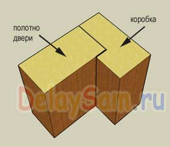
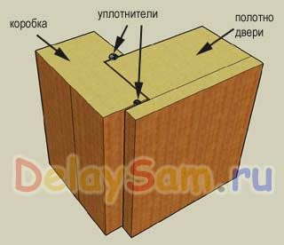

Конструкции энергосберегающих дверей

Энергосберегающий (или энергоэффективный ) дом должен иметь минимальные теплопотери. Двери же, являясь единственным способом входа и выхода из дома, представляют собой весьма уязвимое место в этом плане. Просто при открывании дверей на улицу буквально вылетает несколько кубометров теплого воздуха .
Другим недостатком многих дверей является весьма невысокая звукоизоляция. Двери сделаны из достаточно плотного материала, зачастую из массива. А он прекрасно передает звуки. Если для технических дверей важнее именно теплосбережение, то для межкомнатных особенно важна звукоизоляция.
Все это происходит потому, что в самой конструкция типовых дверей заложены практически неустранимые недостатки. Рассмотрим, какие.

Вот разрез обычной двери. Как видим, коробка представляет собой деревянный брус с выбранной четвертью, на глубину толщины полотна двери. Зазор между торцом полотна и коробкой не устраним принципиально. Иначе дверь будет подклинивать. Поэтому установка уплотнителя возможна только на плоскости четверти, к которой прилегает плоскость полотна двери. Такое уплотнение, разумеется ни у кого не повернется язык назвать эффективным. Поэтому в эту щель всегда будет проходить воздух и сквозняком выдувать еще некоторое количество тепла.
Уплотнять каким либо образом «рабочий зазор практически бессмысленно. Так как дверь будет сработать не на сжатие уплотнителя, а проходить по нему вскользь, очень быстро его истирая. Иногда пытаются применить плоские «лепестковые» уплотнители, но они сами по себе не эффективны. Для эффективного утепления они должны отвечать двум взаимоисключающим требованиям. Быть достаточно жесткими, что плотно прижиматься к двери. И быть очень эластичными, что бы меньше изнашиваться. Как понимаете, выполнить и то и то - сложно.
Еще один недостаток дверей - это наличие замочной скважины, как правило сквозной. Она вообще является прямым вентиляционным каналом, что тоже увеличивает теплопотери.
Поэтому для повышения теплосберегающего эффекта следует изменить как конструкцию самой двери, так и организацию пространства в ее районе.
Следует организовать двойные двери (тамбур, коридор, сени), которые значительно сократят количество теплого воздуха выходящего наружу в процессе входа – выхода жильцов дома. Это решение стандартное и проверено веками. Никогда из домов дверь не вела сразу на улицу. Всегда были какие то подсобные помещения, создававшие воздушный буфер между жилым помещением и улицей.
Но если в дверных косяках есть щели, то поддувать будет поставь хоть несколько дверей. Поэтому необходимо изменить конструкцию самих дверей. В частности - добавить еще один уплотняющий элемент, т.е. еще одну четверть.

Я встречал такие двери в отелях, расположенных в горах. Они отличались не только отсутствием всяких сквозняков, но и отличной звукоизоляцией. Что очень существенно при использовании такой конструкции дверей в качестве межкомнатной.
При такой конструкции размещение 2-х контуров уплотнения не представляет труда. Это в свою очередь практически исключает сквозняки через дверные щели. Причем между ними образуется воздушный зазор, служащий дополнительным теплоизолятором.
С непривычки такие двери выглядят очень непривычно, так как выступают из стены на несколько сантиметров. Хотя, это разумеется просто способ конкретной установки. Ничто не мешает «утопить» их в стену или отделать толстыми наличниками в толщину внешней накладки двери.
Такие двери требуют и специальных петель. Они крепятся не к торцу полотна двери, а к торцу накладки. Это позволяет обеспечить уплотнительный контур по всему периметру двери.
В продаже я таких дверей не встречал, но если честно - и не сильно присматривался, возможно, они и есть. Но и сделать такие двери самостоятельно не так уж сложно.
Константин Тимошенко (с)